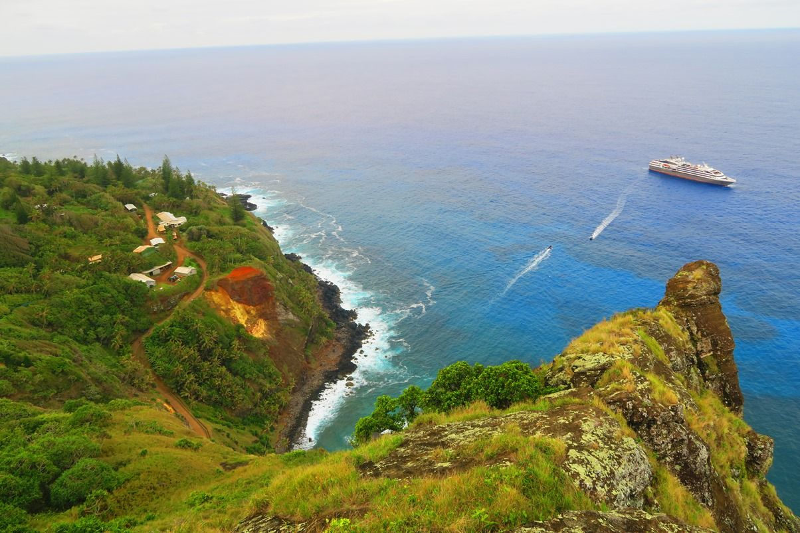

האי המבודד ביותר בעולם - הוא ביתם של כ-50 איש בלבד!
פורסם במקור ב LinkedIn
האי המבודד ביותר בעולם - הוא ביתם של כ-50 איש בלבד!
באמצע דרום האוקיינוס השקט, במרחק 5,300 קילומטרים מניו זילנד, שוכן האי המבודד ביותר בעולם – פיטקרן. האי הזה, ביתם של 50 תושבים בלבד, הוא חלק מקבוצה קטנה של איים, אך הוא היחיד המיושב ביניהם.
מה הופך את פיטקרן לכל כך מיוחד?
האוכלוסייה הקטנה מורכבת מצאצאים מורדי ספינת "הבאונטי" ונשותיהם הטהיטיות שהתיישבו בו בסוף המאה ה-18.
המרד הוא אחת הפרשיות המפורסמות בהיסטוריה הימית, אשר התרחש בשנת 1789, כאשר פלטשר כריסטיאן, קצין זוטר על סיפונה של הספינה הוביל מרד נגד הקפטן הקשוח, ויליאם בליי.
עקב היחס האכזרי והמתיחות הגוברת במהלך המסע להובלת עצי לחם מטהיטי, השתלטו המורדים על הספינה והשאירו את בליי ותומכיו בלב האוקיינוס בסירה קטנה.
המורדים נמלטו לטהיטי, אך מחשש לעונש הבריטים, המשיכו והתיישבו באי פיטקרן המבודד. שם הקימו קהילה קטנה, שרבים מתושביה היום הם צאצאיהם, באי שבו הזמן כאילו עמד מלכת.
החיים בפיטקרן מתנהלים בקצב שונה. באין שדה תעופה, הגישה לאי מתאפשרת רק דרך הים, במסע של יומיים בסירה מהאיים הקרובים. החשמל מסופק באמצעות גנרטור שפועל מספר שעות ביום, והאינטרנט מוגבל. התושבים מתפרנסים מחקלאות, דיג, ייצור דבש איכותי ומכירת מזכרות ובולי דואר לאספנים.
האי מציע אורח חיים פשוט ומנותק מהעולם המודרני, אך עם אתגרים ייחודיים. מערכת החינוך מצומצמת, והצעירים נשלחים לפנימיות בניו זילנד ואוסטרליה, כאשר רבים מהם בוחרים שלא לחזור, מה שמוביל לירידה בכוח העבודה המקומי.
אם היה נפתח לכם חלון הזדמנות לבלות שם תקופה - הייתם קופצים על ההזדמנות? מה הייתם לוקחים איתכם לשם?
#השראה #חייםאחרים #פיטקרן
